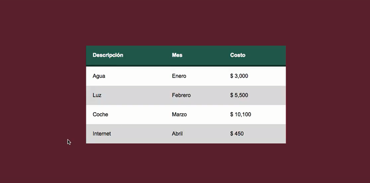
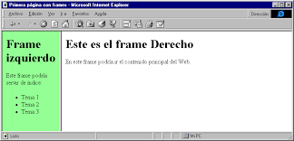
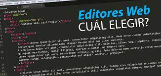

| para crear cada columna.
Las tablas constituyen una herramienta muy eficaz para presentar datos de tabla y establecer el diseño de texto y gráficos en una página HTML. Una tabla consta de una o varias filas, cada una de las cuales consta, a su vez, de una o más celdas. Aunque las columnas no suelen especificarse explícitamente en el código HTML, Dreamweaver permite manipular tanto columnas como filas y celdas.
⚫ División y combinación de celdas de tabla
Podrá combinar cualquier número de celdas contiguas, siempre que toda la selección sea una línea o un rectángulo de celdas, para obtener una sola celda que se extienda a lo largo de varias columnas o filas. Una celda puede dividirse en las filas o columnas que sea necesario, aunque haya sido combinada anteriormente. Dreamweaver reestructura automáticamente la tabla (añadiendo los atributos colspan o rowspan que sean necesarios) para crear el diseño especificado.
Una tabla no es otra cosa más que un medio de organizar datos en filas y columnas. Este concepto ha estado presente en nuestra sociedad por un largo período de tiempo y ha sido adoptado por HTML en sus etapas iniciales, como una forma de transmitir información que, de otro modo, no sería comprendida tan fácilmente.
En documentos HTML una tabla puede ser considerada, resumidamente, como un grupo de filas donde cada una contiene a un grupo de celdas. Esto es conceptualmente distinto a un grupo de columnas que contiene a un grupo de filas, y esta diferencia tendrá un impacto en la composición y comportamiento de la tabla.
Como muchas otras estructuras de HTML, las tablas son construidas utilizando elementos. En particular, una tabla básica puede ser declarada usando tres elementos, a saber, table (el contenedor principal), tr (representando a las filas contenedoras de las celdas) y td (representando a las celdas). Dejémoslo más claro con un ejemplo:

Plantillas
La plantilla web es un recurso fundamental al momento de crear una sitio o página web. Ya que es la carta de presentación del espacio y es el aspecto visual que se convertirá en el imán para atraer al público objetivo o internautas.
También conocido como template o theme, en inglés, es una base prediseñada a la cual se puede personalizar la información básica, imágenes, colores, logotipo, ubicación de los elementos visuales, …
Estas plantillas son diseños realizados por empresas, diseñadores webs, programadores o agencias; donde su objetivo es vender una especie de licencia de uso; aunque hay algunas plantillas que son gratuitas, pero con funciones limitadas.
El termino plantilla web es fundamental al momento de crear una pagina web. Las plantillas web proporcionan las estructuras de nuestros sitios, en una explicación sencilla, lo que hacen es que nosotros diagramamos solamente una vez nuestro sitio y esta plantilla podrá ser repetida en cuantas páginas necesitemos, sin necesidad de empezar desde 0 nuestro sitio cada vez que agreguemos una nueva página a él.
Mediante Photoshop no podremos realizar una página web ya que el uso de este potente software nos puede servir para dibujar un sitio en el, y después recortando las secciones migramos esas partes al código de programación o sea al HTML. La forma para poder realizar las plantillas web es a través de un archivo llamado PSD y en la imagen que guardamos será la que se divida en varias secciones, posteriormente a un archivo HTML deberemos exportar las partes.
Lo primero que debemos hacer es crear mediante Photoshop un documento nuevo. A este les daremos las dimensiones que queramos ancho y altura,estos por lo general los pondremos en pixeles y no en centímetros.
La idea de usar la plantilla es que proporcionan una estructura clara, la ubicación de cada elemento, con una curva de aprendizaje baja, ahorra tiempo y crear páginas webs dentro de un molde con parámetros definidos, sin comenzar desde 0
Una plantilla (template o theme, en inglés) es una página web prediseñada a la cual se puede modificar el texto, las fotos, los colores, el logotipo y la información de contacto. Son diseños realizados por empresas o diseñadores/programadores, que se venden en masa a precios bajos (incluso existen gratuitas) y son populares porque generalmente son sencillas de usar, creando una página web completa en unos cuantos días.
⚫ Ventajas de usar una plantilla
• Fácil uso
Generalmente para utilizar una plantilla no se necesita de muchos conocimientos de informática y la mayoría de ellas son diseñadas de manera amigable, de modo que tareas comunes como cambiar el texto, agregar fotos, videos y redes sociales o cambiar los colores de la página web es tan sencillo como utilizar Facebook.
• Corto tiempo de implementación
Utilizando plantillas, una página web puede estar listo en poco tiempo, esto se debe a que toda la página ya está armada y solamente se necesita ingresar información. Por ejemplo, una página sencilla con información básica de una empresa, con fotos, logos y datos de contacto puede instalarse y estar listo en un día. Páginas web más complejas, de ventas en línea, por ejemplo, tomarán unas cuantas semanas porque deben agregarse los productos, ingresar la información de dichos productos y realizar pruebas al sistema de ventas antes de presentarse al público.
Frames
El diseño con frames es otra forma de diseñar la página en la cual utilizamos varios frames o marcos, (frame: en español significa "marco") de manera que cada uno de los frames consiste en un archivo html distinto. La página queda dividida en diferentes areas, cada una de esas áreas o frames es independiente del resto, y es en sí una página distinta, con un archivo html distinto; aunque las veamos todas en la misma ventana del navegador.
El diseño con frames está poco recomendado hoy en día, prefiriendo usar otros tipos de diseño de página. No obstante podemos encontrar páginas que tienen este tipo de diseño, y también podemos seguir construyendo páginas con diseño de frames.
También se requiere utilizar las etiquetas "Doctype específicas para frames, vistas en la página 8.1. Etiqueta Doctype. El nuevo HTML5 no admite el diseño con frames.
Una página compuesta con frames se compone de un archivo principal, con la definición de los frames o marcos que va a tener, y tantas páginas o archivos HTML como marcos vaya a tener.
La página principal es una página en HTML, en la que la etiqueta body> ... /body> es sustituida por la etiqueta frameset> ... /frameset>.
Los frames (en inglés frame = cuadro, bastidor o marco) es un elemento implementado por Netscape, que permite dividir la pantalla en varias áreas independientes unas de otras, y por tanto con contenidos distintos, aunque puedan estar relacionados. No hay límites para el contenido de cada una de estas áreas: tienen las mismas propiedades que la pantalla completa normal, tal y como la conocemos. No hay que confundir los frames con las tablas. Su apariencia, a veces, puede ser similar, pero mientras el contenido de la celda de una tabla es fijo, en un área de pantalla creado por el elemento FRAME se dispone de todos los recursos del HTML. Es una zona viva.
Las páginas que contienen una definición de FRAME no pueden contener el elemento BODY ni ninguno de los elementos que habitualmente aparecen en el BODY antes del elemento FRAMESET que es el que define la creación del FRAME. Si esto no se cumple, el FRAME será ignorado.
Algunos visualizadores no soportan los frames. Para que nuestra página con frames no resulte opaca a ellos, se utilizará el elemento NOFRAMES que permite ofrecer un texto alternativo en entorno normal.
Los frames permiten una flexibilidad de presentación extraordinaria, y para contenidos muy complejos, de difícil estructura por los medios convencionales del HTML, son casi insustituibles. De nuevo se presenta la duda de para qué visualizador es preferible programar nuestro WWW.

HiperVinculos Locales y Externos
Un hipervínculo, es una conexión directa entre dos espacios virtuales en el mundo digital. Es la forma más rápida que existe en internet de llegar de un punto a otro, con este viajamos a la velocidad de 1 clic.
Un hipervínculo o hiperenlace es un elemento de un documento electrónico que hace referencia a otro recurso, por ejemplo, a otro punto dentro del mismo o de otro documento. Los hipervínculos nos permiten leer de documentos de manera no secuencial e incluso, puede conducirnos a otros documentos (p. ej. una página Web).
⚫ Tipos de hipervínculos.
Un hipervínculo o hiperenlace es un elemento de un documento electrónico que hace referencia a otro recurso, por ejemplo, a otro punto dentro del mismo o de otro documento. Los hipervínculos nos permiten leer de documentos de manera no secuencial e incluso, puede conducirnos a otros documentos (p.ej. una página Web). Por decirlo llanamente los hipervínculos nos permiten hacer “saltos” dentro de un documento o entre documentos.
Aunque hasta ahora quizás no supieses que era un hipervínculo los llevas usando muchos años. Los hipervínculos o hiperenlaces son el elemento clave de la web. Las páginas web nos permiten "saltar" de unas a otras por medio de enlaces. Al texto que contiene hipervínculos se le suele llamar hipertexto.
Es importante recalcar que los hipervínculos sólo tienen sentido cuando el documento que estamos preparando va a ser leído a través de un dispositivo electrónico. Esto es cada vez más habitual gracias a los ordenadores y especialmente a las tabletas, libros electrónicos y teléfonos inteligentes. De hecho, las posibilidades que ofrecen los hiperenlaces suponen una ventaja de los documentos hipertextuales respecto a los documentos en formato papel.
Los hipervínculos se suelen representar como un texto en color azul y subrayado. Si el hipervínculo ha sido visitado, el texto aparecerá normalmente en morado. Este es el aspecto de un documento con un hipervínculo sin visitar y otro visitado.
➼ Hipervínculo local o interno: Un hipervínculo local o interno es un vínculo a una página que se encuentra en el mismo sitio web (sitio local). Así, para referirnos a ella tan solo basta con poner la ruta o dirección en el disco duro. Si se encuentra en la misma carpeta, basta con poner su nombre.
➼ Hipervínculo externo : Un hipervínculo externo es un vínculo a otro sitio web en Internet (sitio externo). Es un vínculo a cualquier otro lugar fuera del sitio actual. Cuando ponemos un vínculo externo, escribimos la dirección completa de la página incluido http://www.....
➼ Hipervínculo de texto: Un hipervínculo de texto es un enlace que se encuentra asociado a un texto, de forma que si hacemos clic sobre ese texto, navegamos dónde indique el hipervínculo. Por defecto, cuando creamos un hipervínculo de texto, el texto aparece subrayado y en un color distinto al del texto normal, de forma que el visitante sepa que existe ese enlace. Si volvemos a la página después de visitar el enlace, este aparecerá con otro tono también. Aunque es interesante diferenciar el hiperenlace, es posible que no queramos que aparezca así.
p class="parrafos ">
➼ Hipervínculo de imagen: Un hipervínculo de imagen es un enlace que se encuentra asociado a una imagen, de forma que si hacemos clic sobre esa imagen, navegamos dónde indique el hipervínculo. Por defecto cuando creamos un hipervínculo de imagen, la imagen aparece rodeada de un borde con un color llamativo para que el visitante sepa que existe ese enlace.
➼ Hipervínculo a una dirección de correo electrónico: Un hipervínculo a una dirección de correo electrónico es un vínculo que contiene una dirección de correo. Al pulsar en él, automáticamente se abre el programa de correo que tenga el usuario instalado para poder escribir a esa dirección de correo.
Sofware de edicion de Sitios Web
Un editor de páginas web es una aplicación diseñada con el fin de facilitar la creación y edición de documentos HTML o XHTML. Su complejidad puede variar desde la de un simple editor de texto plano, entornos WYSIWYG, hasta editores WYSIWYM.
También llamado editor de texto plano. Este tipo de editor suele ser muy sencillo. Dos ejemplos son Notepad o Bloc de Notas (incluido en Windows) y Kate (GNU/Linux). Con cualquiera de los dos bastaría para escribir las líneas de código necesarias para diseñar una página Web.
Existen editores de texto específicamente diseñados para la edición Web, que como Kate, incluyen dentro de su simplicidad coloreado de sintaxis y las etiquetas de marcado usuales necesarias en el lenguaje de hipertexto. Dichos editores incluyen una serie de botones para insertar rápidamente las etiquetas, o combinaciones de estas, más corrientes, salvar el documento con un clic y visionarlo posteriormente en una nueva ventana.
EDITOR DE TEXTO Y VENTANAS
Puede descargar la mayoría de los programas que necesita para el desarrollo web de forma gratuita. Proporcionaremos unos enlaces en este artículo.
Necesitarás herramientas para:
Crear y editar páginas web
Cargar archivos a tu servidor web
Visualizar tu servidor web
Es una versión ligeramente más sofisticada que la anterior. Suelen constar de un par de ventanas. Una área de trabajo, donde se teclea el código HTML y el texto que se quiere incluir en la página, y en la otra se visualiza el resultado en tiempo real. En otras palabras se obtiene una previsualización del documento generado. Lo que significa que no se tiene que guardar el documento, previamente, antes de volver a abrirlo con el navegador para comprobar el resultado.

Publicador de sitios Web
La práctica habitual es diseñar las páginas web de nuestro sitio web en el disco duro del equipo para luego enviarlos al servidor web junto con los archivos multimedia referenciados (imágenes, animaciones, audios, etc). A este proceso se le llama publicación web. Mediante este procedimiento se pone a disposición de cualquier usuario con acceso a Internet las páginas web del centro o proyecto al pasar a estar alojadas físicamente en un ordenador servidor con acceso permanente desde Internet.
La subida de archivos desde el equipo local al servidor se puede realizar mediante un programa que utiliza el protocolo FTP (File Transfer Protocol = Protocolo de Transmisión de Archivos). Esta transferencia de archivos se realiza en modo autentificado, es decir, introduciendo un nombre de usuario y contraseña para evitar que otras personas puedan publicar en nuestro espacio web.
En consecuencia antes de afrontar la tarea de publicación será necesario obtener los siguiente datos del administrador del servidor web:
➼Dirección del servidor FTP: Es la URL del servidor que atiende peticiones de conexión por FTP para la subida de archivos. Si el servidor web es del CNICE puede ser uno de estos: roble.pntic.mec.es, ficus.pntic.mec.es, centros5.pntic.mec.es, etc. Si es Yahoo será: ftp.es.geocities.com
➼Usuario y Contraseña: Son los datos de la cuenta que es necesario introducir para realizar una subida autentificada de recursos y que estos recursos se alojen en la ubicación correcta del servidor.
➼Dirección del servidor HTTP: Es la URL del servidor web que nos permitirá acceder a nuestras páginas usando el navegador web.

Servidor
Un servidor es un conjunto de computadoras capaz de atender las peticiones de un cliente y devolverle una respuesta en concordancia. Los servidores se pueden ejecutar en cualquier tipo de computadora, incluso en computadoras dedicadas a las cuales se les conoce individualmente como «el servidor». En la mayoría de los casos una misma computadora puede proveer múltiples servicios y tener varios servidores en funcionamiento. La ventaja de montar un servidor en computadoras dedicadas es la seguridad. Por esta razón la mayoría de los servidores son procesos diseñados de forma que puedan funcionar en computadoras de propósito específico.
Los servidores operan a través de una arquitectura "cliente-servidor". Los servidores son programas de computadora en ejecución que atienden las peticiones de otros programas: los clientes. Por tanto, el servidor realiza otras tareas para beneficio de los clientes; les ofrece la posibilidad de compartir datos, información y recursos de hardware y software. Los clientes usualmente se conectan al servidor a través de la red, pero también pueden acceder a él a través de la computadora donde está funcionando. En el contexto de redes Internet Protocol (IP), un servidor este es un programa que opera como oyente de un socket.1
Comúnmente, los servidores proveen servicios esenciales dentro de una red, ya sea para usuarios privados dentro de una organización o compañía, o para usuarios públicos a través de Internet. Los tipos de servidores más comunes son servidor de base de datos, servidor de archivos, servidor de correo, servidor de impresión, servidor web, servidor de juego, y servidor de aplicaciones.2
El término servidor es ampliamente utilizado en el campo de las tecnologías de la información. A pesar de la amplia disponibilidad de productos etiquetados como productos de servidores (tales como versiones de hardware, software y OS diseñadas para servidores), en teoría, cualquier proceso computacional que comparta un recurso con uno o más procesos clientes es un servidor. Tomemos como ejemplo la acción de compartir archivos. Mientras que la existencia de archivos dentro de una computadora no la clasifica como un servidor, el mecanismo del sistema operativo que comparte estos archivos a los clientes sí es un servidor.
De manera similar, consideremos una aplicación web servidor (como por ejemplo el servidor multiplataforma "Apache"). Este servidor web puede ejecutarse en cualquier tipo de computadora que cumpla con los requerimientos mínimos. Por ejemplo, mientras un ordenador portátil (en inglés, laptop) o computadora personal usualmente no son consideradas como servidores, en ciertos casos (como el anterior) pueden cumplir el rol de uno y por lo tanto ser denominadas servidores. En este caso, es el rol de la computadora el que la coloca en la categoría de servidor.
En el sentido del hardware, la palabra servidor normalmente etiqueta modelos de computadora diseñados para hospedar un conjunto de aplicaciones que tiene gran demanda dentro de una red. En esta configuración cliente-servidor, uno o más equipos (lo mismo una computadora que un programa informático), comparten información entre ellos de forma que uno actúa como anfitrión (en inglés, host) de los otros.
Definición Servidor (hardware): un servidor basado en hardware es una máquina física integrada en una red informática en la que, además del sistema operativo, funcionan uno o varios servidores basados en software. Una denominación alternativa para un servidor basado en hardware es "host" (término inglés para "anfitrión"). En principio, todo ordenador puede usarse como "host" con el correspondiente software para servidores.
Definición Servidor (software): un servidor basado en software es un programa que ofrece un servicio especial que otros programas denominados clientes (clients) pueden usar a nivel local o a través de una red. El tipo de servicio depende del tipo de software del servidor. La base de la comunicación es el modelo cliente-servidor y, en lo que concierne al intercambio de datos, entran en acción los protocolos de transmisión específicos del servicio.

Dominio
El dominio web de tu sitio web es esencialmente el equivalente a una dirección física. De la misma manera que un satélite necesita una dirección o un código postal para dar direcciones, un navegador web necesita un nombre de dominio para dirigirte a un sitio web.
¿Cómo funcionan los dominios?
Los dominios funcionan actuando como un atajo para llegar al servidor que aloja tu sitio web.
Sin un dominio, cualquiera que quisiera visitar tu sitio web tendría que escribir la dirección IP completa. Pero el problema es que una dirección IP es difícil de memorizar o incluir en los materiales publicitarios.
Como puedes ver, jugar con los valores predeterminados del servidor y las direcciones IP puede ser confuso y demorado. Es por eso que la gran mayoría de propietarios de sitios web optan por utilizar un servicio como Hostinger que ofrece dominios incluidos en paquetes de alojamiento web anuales.
Un nombre de dominio (a menudo denominado simplemente dominio) es un nombre fácil de recordar asociado a una dirección IP física de Internet. ... Por ejemplo, el nombre de dominio example.com se podría traducir a la dirección física 198.102.434.8. Otros ejemplos de nombres de dominio podrían ser google.com y wikipedia.org.
Es el nombre único e irrepetible que se le da a un sitio en Internet para que las marcas (propietarias de dichas páginas) sean identificadas de forma cómoda y sencilla por los usuarios y sus clientes.
Al considerarse como exclusivo, solo habrá una empresa, compañía, organización o persona con dicho nombre. Para asegurar esto, existen organizaciones encargadas de los dominios en Internet, tales como IANA e ICANN.
Registrar un dominio en Internet es el primer paso para tener presencia en la web. Sin embargo, con solo un dominio no podrás publicar tu sitio web, ya que también necesitarás un web hosting.
Es importante recalcar que con la elección y registro de tu dominio en Internet podrás crear cuentas de correos personalizados que te permitirán proyectar profesionalismo y ganarte la confianza de los clientes potenciales.
Como ejemplo pondremos a Rock Content, nuestro dominio es rockcontent.com/es, con él podemos crear correos electrónicos dirigidos a diversas áreas, por ejemplo: egdar.higuerey@rockcontent.com.
Otro de los puntos importantes de los dominios en Internet es que son términos memorizables y fáciles de recordar por los internautas, porque ¿no te parece que es más sencillo recordar google.com que su dirección IP
Alojamiento y Publicacion
El alojamiento web (en inglés web hosting) es el servicio que provee a los usuarios de Internet un sistema para poder almacenar información, imágenes, vídeo, o cualquier contenido accesible vía web. ... La Cámara ofrece un servicio de Alojamiento web, correo eletrónico y registro de dominio
Pensemos en su sitio web como una casa construida a partir de archivos individuales. El alojamiento web sería el terreno donde se encuentra la casa (sitio web) y el dominio, su dirección. Cuando alguien escribe el nombre de dominio en el navegador o pulsa sobre un enlace, a través de ellos el navegador localiza el servidor correcto y descarga los archivos del sitio web.
Alojamiento Web, también llamado Alojamiento compartido
En el pasado, compartir un servidor ocasionaba problemas, como que al aumentar el tráfico o el uso de recursos de un sitio, se ralentizaban los sitios web "vecinos". Sin embargo, hoy en día las suscripciones de alojamiento web vienen con una cantidad generosa de recursos que garantizan un buen funcionamiento, en la mayoría de los casos. Los proveedores avanzados ejecutan además soluciones de aceleración y equilibrio de carga para contener los picos, así como medidas para investigar los sitios web que utilizan una cantidad de recursos fuera de lo normal.
El alojamiento web (en inglés web hosting) es el servicio que provee a los usuarios de Internet un sistema para poder almacenar información, imágenes, vídeo, o cualquier contenido accesible vía web. Es una analogía de «hospedaje o alojamiento en hoteles o habitaciones» donde uno ocupa un lugar específico, en este caso la analogía alojamiento web o alojamiento de páginas web, se refiere al lugar que ocupa una página web, sitio web, sistema, correo electrónico, archivos etc. en internet o más específicamente en un servidor que por lo general hospeda varias aplicaciones o páginas web.
Publicar un sitio no es un tema sencillo, principalmente porque hay muchas maneras diferentes de hacerlo. En este artículo no se trata de ver todos los modos posibles. En su lugar, discutiremos los pros y contras de tres amplias estrategias desde el punto de vista de un principiante, y luego debes seleccionar qué método usarás.
Consejos para elegir alojamienoto y dominio
En MDN no promovemos empresas comerciales de alojamiento o resgistradoras de nombre de dominio específicas. Para encontrarlas basta con buscar «alojamiento web» o «hosting web» y «nombres de dominio». A veces las empresas proporcionan ambos en un paquete único. Los registradores acostumbran a facilitar la manera de comprobar si el nombre de dominio que deseas para tu sitio está disponible.
El proveedor de servicio de Internet (ISP) de tu casa u oficina puede proporcionar algún alojamiento limitado para un pequeño sitio web. El conjunto de características disponibles será limitado, pero podría ser perfecto para tus primeros experimentos; ¡ponte en contacto con ellos y pregunta!
Hay servicios gratiuitos disponibles como Neocities, Blogspot, y Wordpress. Una vez más, obtienes lo que pagas, pero son ideales para tus experimentos iniciales. Los servicios gratuitos en su mayoría no requieren software de FTP para transferencias de archivos pues permiten arrastrar y soltar archivos justo dentro de su interfaz web.
El servidor web es un ordenador donde se almacena el contenido del sitio. Básicamente, el servidor web se utiliza para alojar los sitios web, pero también existen otros servidores web como juegos, almacenamiento, FTP, correo electrónico, etc.
Solucion Web
En Seo Solutions proporcionamos soluciones web completas que contemplan desarrollo y diseño web, SEO, SEM, marketing online, Social Media y soluciones Smartphone para nuestros clientes de Valencia y Barcelona.
SOLUCIONES WEBEstas soluciones son un conjunto de servicios destinados a proporcionar una alta visibilidad en internet, un diseño atractivo, sencilla navegabilidad, una alta conversión visita-cliente y accesibilidad desde dispositivos móviles. Y es que nuestro desarrollo web a través del CMS permite gestionar con facilidad cualquier cambio necesario para su sitio. Dichos cambios consisten en modificar sus imágenes, cambiar o añadir textos, estructurar de forma más clara el diseño web para facilitar la navegación y crear nuevos apartados o servicios que ofrecer a sus clientes y hasta incluir enlace
El tipo de Web que necesitas
Si tu empresa necesita un e-commerce, una Web corporativa, un periódico digital o simplemente una forma de publicitarse online, nosotros la creamos para ti.
Posicionamiento SEO
De nada sirve una Web bien hecha si no se posiciona correctamente, sería como montar una tienda espectacular en mitad del desierto. Para que tu Web sea útil tus futuros clientes tendrán que encotrarla, y para ello esa Web tendra que estar optimizada para su correcta indexación en los motores de búsqueda.
Dominios y Hostings
Nuestros hostings y dominios son directamente proporcionales a lo que nuestros clientes necesitan para su web. Por eso con nosotros nunca pagarás de más por un hosting cuando tu web, por ejemplo, no necesita tanto espacio. Además tenemos una política de copias de seguridad estricta.
Estas soluciones son un conjunto de servicios destinados a proporcionar una alta visibilidad en internet, un diseño atractivo, sencilla navegabilidad, una alta conversión visita-cliente y accesibilidad desde dispositivos móviles. Y es que nuestro desarrollo web a través del CMS permite gestionar con facilidad cualquier cambio necesario para su sitio. Dichos cambios consisten en modificar sus imágenes, cambiar o añadir textos, estructurar de forma más clara el diseño web para facilitar la navegación y crear nuevos apartados o servicios que ofrecer a sus clientes y hasta incluir enlaces.
Plataforma Web
Las plataformas digitales o plataformas virtuales, son espacios en Internet que permiten la ejecución de diversas aplicaciones o programas en un mismo lugar para satisfacer distintas necesidades
El principal objetivo que cumplen las plataformas digitales es facilitar la ejecución de tareas a través de programas o aplicación en un mismo lugar en la web.
Como existe una gran variedad de plataformas digitales, los objetivos específicos de cada una de ellas varían de acuerdo con la necesidad de los usuarios.
¿Qué tipos de plataformas digitales existen?
Existe una infinidad de tipos de plataformas digitales. Con cada problemática se puede generar un tipo de plataforma digital diferente.
A continuación vamos a ver los principales tipos que existen:
Plataformas educativas
Estas plataformas se enfocan en la educación a distancia e intentan simular las mismas experiencias de aprendizaje que encontramos en un salón de clase.
Sirven para complementar o sustituir el proceso de educación tradicional.
Como ejemplos de plataformas educativas podemos mencionar a Blackboard, e-College y Moodle.
Plataformas sociales
Las plataformas sociales conocidas también como redes sociales, son muy utilizadas actualmente por gran parte de nuestra sociedad.
Son aquellas plataformas digitales donde se guardan diversas informaciones relacionadas con las interacciones sociales.
Gracias a ellas los usuarios se conectan y mantienen relaciones con familiares, amigos o conocidos a través de Internet.
Podemos citar Facebook, LinkedIn, Instagram y Twitter como ejemplos de plataformas sociales.
Cualquiera de las herramientas que se presentan a continuación te permitirán crear fácilmente tu propio sitio web personalizando el diseño, agregando o sacando contenido cuando lo necesites, y en el caso de preferirlo, agregarle un nombre propio de dominio. Con estas herramientas, en dos horas podrás tener tu propio sitio web online y con una estética profesional.
Por lo tanto, si estás comenzando un negocio en línea o simplemente estás buscando ofrecer un servicio en Internet, tener una página visualmente atractiva y que sea fácil de navegar será muy importante para que tenga buenos resultados. Además, en estos casos, es muy sencillo e intuitivo, ya que simplemente arrastrando y soltando elementos en el área de contenido podrás personalizar la página. La mayoría ofrecen una versión Premium, además de la opción básica gratuita, con una gran cantidad de plantillas y de características que te permiten crear sitios web interactivos.
|